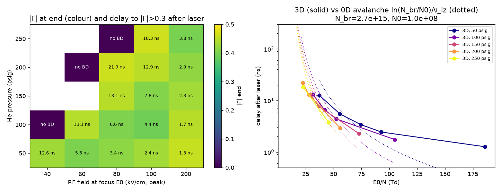

What each calculation explains
These studies answer different questions. The RF-fluid, local afterglow, and kinetic calculations are not one fully coupled whole-device simulation.
The laser line and the plasma rod are different objects
In the current WR-284 switch geometry, the strong RF electric field points along y, across the 34-mm gap between the broad walls. The laser travels along x, across the broad dimension of the guide, perpendicular to E. The laser initially seeds a line; the conducting rods must then grow from that line toward the broad walls along E.
The parallel comparison puts the laser along y instead. In that configuration the seed is already aligned with the gap field. The matched short-window calculations use the same assumed pulse, seed prescription, and material coupling, changing only the laser axis. Their RF loading and final spatial distributions differ.

Optical scope: the displayed beam is a prescribed vacuum Gaussian, not a validated propagation calculation. The 20-micrometer waist is assumed. Focus movement can change where seed electrons overlap the RF mode, so a focus effect is not automatically evidence for a different microscopic seed mechanism.
Expansion and light emission after RF energy deposition
RF work first changes electron energy and plasma chemistry; some energy is transferred to the heavy gas. The bounded dynamics study follows a short 3D Maxwell/chemistry stage with a local cylindrical gas-afterglow calculation. That handoff assumes the RF is quenched. It is different from the continued-drive rod calculation, and does not simulate the entire 5-microsecond driven cavity.
The gas model evolves compressible radial expansion and compression with plasma chemistry. A Sod shock-tube test verifies aspects of the numerical Euler solver. It does not show that the helium example forms a shock: the reported example is subsonic, and velocity peaks remain mesh-dependent.

Radiation scope: resonance/excimer emission uses a reduced escape treatment, not line-resolved radiation transport. Visible continuum estimates are conditional optically thin diagnostics, not a calibrated camera signal. Brightness alone should not be interpreted as electron density, gas temperature, or proof of an arc.

A local kinetic check, not a full-cavity PIC solution
The project includes executed WarpX 1D3V particle-in-cell calculations with Monte Carlo collisions. They provide actual macroparticle histories, weighted electron-energy distributions, and electron-count diagnostics. The driving sinusoidal electric field is prescribed, and the neutral gas is a fixed thermal reservoir.
This PIC calculation is independent of the time-dependent cavity solution. Its clock and field are not exported from the 3D switch model. It therefore tests a restricted kinetic problem, not wall-to-wall channel growth or a whole-device discharge.

Validation scope: drift/work checks and low-field ionization validation remain incomplete. The separate mesh/time refinements also leave gas velocity peaks and late arc properties unresolved. Consult the machine-readable results for both passed and failed checks rather than treating the existence of PIC as full validation.

Separate trends from calibrated predictions
The earlier coupled-model scans vary gas pressure, RF field, laser inputs, and seed assumptions. The explorer lets you select runs and compare RF response, electron histories, and other saved metrics. It is useful for sensitivity and ordering, but the cases do not all share the current switch model's geometry or initial conditions.

The published Technion helium microwave-switch anchors identified in the literature review are at 0.20 MPa, not the 1.48-MPa project condition. Air-filament images and X-band gas-breakdown data are also different experiments. Those references constrain selected mechanisms and observables; they are not direct validation of every high-pressure helium result.
Field-scale caveat: a separate probability model used an illustrative 3.91 field multiplier fitted to an assumed probability at a reported field. It is not an independent field calibration and is not a universal conversion for all figures. Absolute RF power, the conducting radius, and the microscopic seed source remain uncertain.